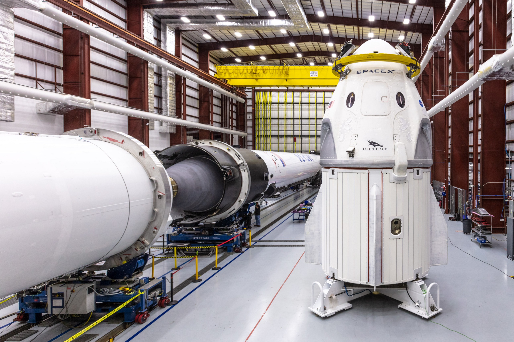
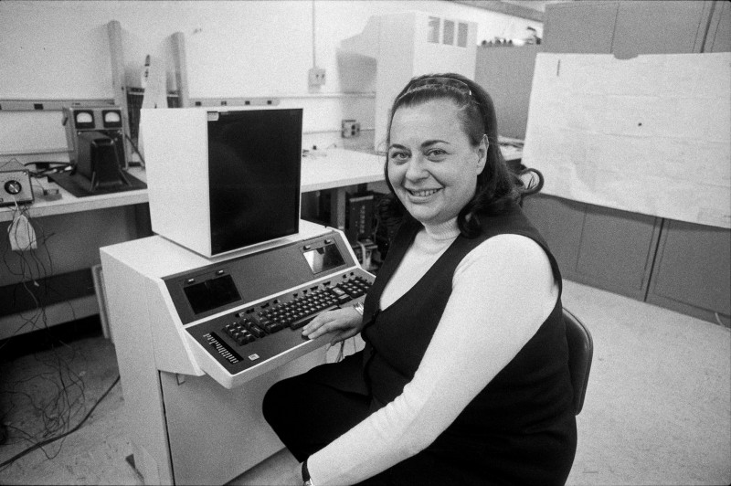
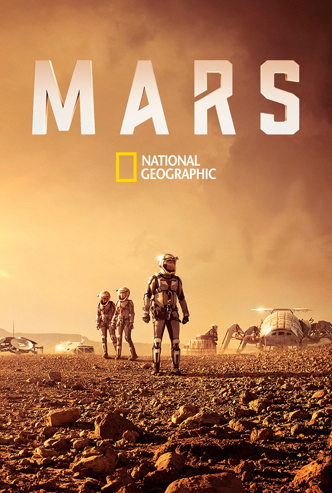
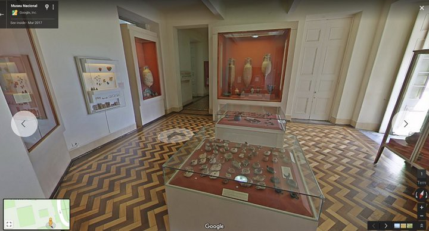
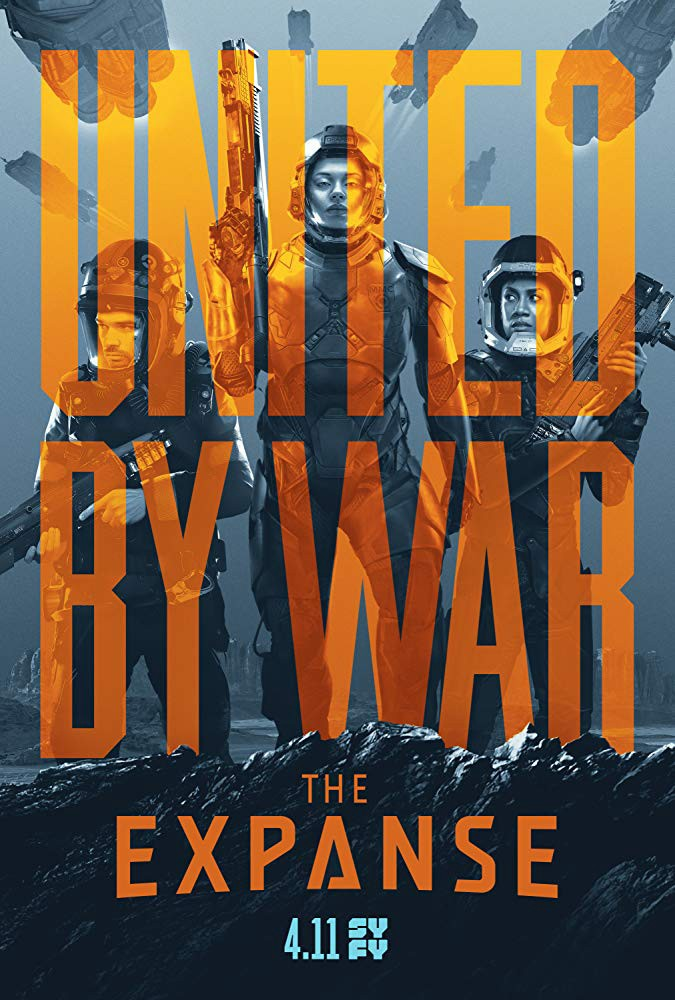

分享我每週的所見所聞
如果不知道這是什麼奇怪的標題，請移駕 記錄我每週的所見所聞 。

取自 NASA
每週一圖
SpaceX 的 Falcon 9 火箭與 Crew Dragon 太空船，目前停泊在佛羅里達的甘迺迪太空中心 Kennedy Space Center，預計 2019 年 1 月 17 日升空測試。
新聞：文字處理器發明者 Evelyn Berezin 去世
臺灣這邊在報導這一篇新聞的時候通常都是說「複製貼上」功能發明者。我查了一下發現國外的新聞都是寫文字處理器 word processsor 的發明者，可能寫複製貼上臺灣的讀者比較容易理解吧？我們現在用微軟的 Word 或是蘋果的 Pages 來處理文字，但在這些軟體問世以前負責相關工作的可是不折不扣的硬體喔！

紐約時報的註解中有指出 Evelyn Berezin 不僅設計了第一台文字處理器，還成立公司將它們銷售出去，由此可見她是一位集實作與行銷於一身的人才。
這篇新聞讓我想到另外一位對於現代也是貢獻良多的女性 Hedy Lamarr。
取自 Wikipedia
雖然是 20 世紀的人物，她的 Secret Communications System 專利，卻為 21 世紀的 CDMA、Wi-Fi 甚至 Bluetooth 等技術都奠定了基礎。
我同意為 Maria Skłodowska-Curie 正名是一件很重要的事，但讓更多人知道女性在科學上的付出，不讓她們的貢獻被埋沒，似乎才是更積極的做法 🤔
新聞：瑞典教授僱傭兵殺進戰區救學生
這篇新聞出來之後不久，中國就有人貼了一篇 为什么最硬核的隆德大学会不惜一切代价把你抓回来写论文：
等确认好招收某位学生后，这一年一百万，四年总共四百万的钱就被大学控制了…而且专款专用，只能用于这位学生的培养上，导师别想拿钱去做别的什么事。所以导师找人非常谨慎，而且招到之后没出点成果肯定没完。
雇用傭兵的費用最後還是要由博士生支付，但既然博士生在研究所期間的一切費用乃至生活開銷都由大學支出，也算是大學間接支付了這一筆費用。
我從文章看到 Lund University 以學生為主的辦學理念，相較於臺灣還是以教授為主的教育體制有很大的不同。我不敢斷定孰優孰劣，只能說是東西方的文化差異。
我不是沒有考慮過繼續往上唸研究所，但除了對更進階的研究課題沒有興趣，同時也擔心自己糟糕的數學能力會不會變成自己跟教授的累贅。唯一後悔的大概就是沒有機會接受完整的研究方法教育吧！事後證明即使沒有研究所文憑，我還是有辦法找到工作。
但薪水有沒有比研究所畢業生低就不得而知了 🤷♂️
新聞：Boring Company 首條地底高速隧道亮相
埃隆·马斯克就把一个可能动用国家力量都解决不了的科技难题，变成了一个公司层面可以操作的资本问题。 — — 《任务分解》
取自 cnbc.com
Elon Musk 的目標就是去火星，而在前往火星之前有一拖拉庫的問題要解決。Elon Musk 不但要解決這些問題，還要設法把解決方案的成本降下來，讓足夠大的消費市場也負擔得起。我不是一個捲起袖子來說幹就幹的人，所以我很佩服 Elon Musk，希望他有一天真的能夠登陸火星。
Boring Company 跟殖民火星有什麼關係？由於火星的大氣相較於地球來說稀薄許多，人類在殖民初期可能要把殖民地建立在地底下，以避免強烈的太陽輻射或火星上的大氣活動，Boring Company 的挖掘技術此時就能派上用場。

取自 IMDb
國家地理頻道 National Geographic 推出的劇情式紀錄片《火星時代》，就有把殖民地建立在地底下的劇情。這部劇中穿插諸如 SpaceX、NASA、火星學會 Mars Society 等成員的訪談，介紹大量關於火星殖民的現況與未來展望。但由於要盡可能地呈現殖民火星時人類會遇到的難題，劇情稍嫌破碎，如果把它當作影集來看可能會非常失望。
如果你好奇挖出來的土都跑到哪裡去了，可能被拿去蓋中世紀瞭望塔了 😆
新聞：被烧毁的巴西国家博物馆，正在互联网的帮助下「复活」
今年九月，巴西國家博物館大火，2,000 萬館藏燒到只剩下 10%。
2000 万件文物是什么概念？故宫的馆藏文物数是 186 万，大英博物馆拥有 800 万件文物，单从数量上来说，巴西国家博物馆这场历劫毁掉了两个故宫 + 大英博物馆。

取自 ifanr
而現在透過 Google 街景服務，被燒毀的館藏有望重現在世人面前。
如果我是巴西政府，在知道國家建設的經費可能排擠到博物館的維護費用，導致博物館的展品暴露在高風險時，我會將展品外借給保存設施相對良好的博物館，然後我再跟對方分拆展品帶來的收益。這樣既可以降低展品面臨的風險，也可以挪出經費來投資更多經濟建設，一舉兩得。
只是現實世界從來沒有這麼簡單，一旦出現「自己的館藏自己展」之類民族主義的訴求時，整個問題就會一下子上升到政治議題的層次。當地獄的怒火熊熊燃起時，爭論中的我們就只剩下望「火」興嘆的份了。
科技島讀：PC 遊戲隨通路走向多元化
取自 4gamers
雖然因應 Epic Games 的做法，Valve 也調整了他們的抽成比例，只要收益超過 1,000 萬美元，就會從原本的 30% 調整為 25%；如果超過 5,000 萬美元，就會降為 20%。然而這樣的門檻對於一些中小型遊戲開發商，甚至獨立遊戲工作室是相當困難的事情，而且仍然高於 Epic Games 的 88/12 分。
Steam 長期處於 PC 遊戲分銷領域的壟斷地位，期間雖然有插旗家機市場的嘗試，但看起來好像不怎麼成功。現在 Epic Games 又靠著分潤優惠挑戰 Steam 的壟斷地位，出師不利又腹背受敵的 Valve 說不定會為了避免陷入紅海 red ocean 競爭，突然學會「數三」了呢！
技術
微軟正式發表輕量化桌面環境程序 Windows Sandbox
桌面環境是微軟的強項，很納悶為什麼到現在才推出這一項能夠大展拳腳的產品。不過有推出了就是好事，畢竟能夠經歷市場檢驗的產品才是好產品 📈
HTTPie 1.0 發布
事實上 2018/11/2 就發布了，但直到這週五我透過 GitHub 的 Release Radar 才知道這件事。自從有了 HTTPie，除了 production server，我已經很少在自己的電腦上使用 curl 或 wget 了 🔧
聽書：人性的弱點
取自 Wikipedia
卡內基的名號如雷貫耳，但一直到聽了這本書才正式接觸了卡內基的作品。其中最讓我震撼的是其中一個觀點：
如果要批評別人，一定要謹慎。
這句話徹底摧毀我的想像：「一個人在歷經自我或他人的訓練之後，可以理性地接納他人的批評指教」。卡內基開宗明義地指出，在絕大多數的情況下，人都不會自責，更不會輕易接受批評，這是人性的一個弱點。
這讓我想起不久前看過的一篇文章〈為什麼認錯這麼難？〉跟一部影片〈【 志祺七七 】一切都是 they 的錯？為什麼認錯道歉這麼困難？〉，內容都是在探討為什麼認錯這麼難，原因不外乎是錯誤被揪出時，大腦會短暫地出現認知失調。既然是生理上的弱點，要求一個人在被揪出錯誤後還保持理性自然非常困難。
身為工程師，每天都在不同的場合被揪出錯誤，諸如 bug 回報、code review、新功能開發上與 product owner 意見分歧。一開始年輕氣盛，自然會對於自己的觀點被挑戰而爭得面紅耳赤，這些情緒反應也成為我工作上的重重阻礙。
我後來試著在發火之前，先冷靜下來分析對方的觀點，思考看看有沒有什麼解決方案。由於思緒被帶走了，發火的機率就降低不少；如果還是沒有控制住情緒，趕快冷靜下來。事後不管對方在不在意，找機會向對方道歉。
說起來很簡單，但我自己也還在努力實踐。在此要謝謝那些願意指正我的同事們，也謝謝他們願意給我改善的機會 🙇
影集：內政保鑣 Bodyguard
取自 IMDb
- 分類：劇情/政治驚悚
- 國家：英國
- 集數：一季六集
會想要推薦影集，是因為看到了加點吉拿棒的這一支影片：
加上同事時不時地就會問一句：「最近有什麼好看的影集？」所以我就想在 2018 年看過的影集之中選了一部還不錯的來推薦。必須醜話說在前頭的是，我不是一個專業的影評，所以只能基於自己觀賞時的體驗來推薦這一部影集。下面這個 meme，能夠一針見血地總結我觀賞期間多次出現的反應：
取自 imgflip
我自認我看過的影集、電影應該算不少了，對於一而再、再而三出現的劇情也有非常基本的預知能力。問題是，這一部影集的劇情發展完全不按照我的預測走。不是看似很重要的角色一下子就領便當了（當然要合情合理），就是你已經做好心理準備的驚險場面根本沒有發生，唯一確定有發生過的只有腦門放鬆後的酸麻感。這一部影集的另外一個優點是長度不長，只有六集，非常適合想要快速刺激的觀眾收看。
展望 2019，是一個影集爆炸的年份。除了已經確定的 Game of Thrones 將在四月回歸，尚未確定的則有 Rick and Morty、Silicon Valley 與 Westworld。

取自 IMDb
另外我到目前為止最喜歡的硬科幻影集 The Expanse，在經歷 Syfy 棄坑，由 Amazon 接手的波折後，是否會在 2019 年迎來最新一季就成了一個未知數。
本週金句
最好不要批评别人，如果一定要批评，千万要慎重。 — — 《人性的弱点》
這句話背後的含義已在前面提過，這裡就不重複了。
大脑是一个四面透风的岛。 — — 《为什么有些经验你学不会？》
這一期分享的是為什麼豐田模式 Toyota management 其他企業學不來？其一是豐田將除錯的權力下放給第一線員工的同時，也改良生產線的設計，例如將生產線分段，讓員工在停下生產線時，不會影響到整個工廠；其二是領班在生產線運作的過程中隨時待命，一旦有異常狀況立刻上前，避免第一線的員工手足無措。整個模式最後建立的是一個允許錯誤並鼓勵改善的環境，而這一點往往成為其他企業導入時的障礙。
這一句話旨在鼓勵公司成員都能夠接納來自不同階層的問題與意見，畢竟有些事情第一線人員可能比 CEO 的瞭解還多，但問題背後的解決方案可能要動用管理層的權限才有辦法解決。
人非孤岛，无人可以自全。 — — 《维米尔的帽子》
原文 “No man is an island, entire of itself.” 每週分享的挑戰開始之後，特別能體會這句話背後的含義。當你知道至少有一個人會細細品味你的作品時，你就會有動力持續下去，並在這個過程中慢慢進步。
大家在追求的一个东西，一个很明显能带来竞争力的东西，但是追求到最后，突然发现，谁都不能通过它获得竞争力，反而必须避开他，另走新路。 — — 《技术优势是护城河吗？》
軟體工程師說不定就是一個活生生的例子？
無論是在網路上還是現實生活中、走正規教育路線畢業還是跨領域轉職成功的工程師，對於坊間特訓班出身的「工程師」，都若有似無的表現出輕蔑的態度。但當特訓班彼此競爭、淘汰、進化後，如果有一天已經可以比照工廠一樣定時定量地培育出資質尚可的工程師，那工程師的護城河是否就此被打破了？唯有持續學習，才能在時代洪流中立足。
在此引用一句被引用了無數次，但持之以恆者不多的金句，共勉之：
“Stay hungry, stay foolish.” — Steve Jobs, 2005
但随着我们对世界了解的加深，我们发现：这个世界，其实在底层规律上，到处都一样。 — — 《在哪里能找到外星人？》
以前在看《天才博士的有趣相對論探險 II》時，我就很好奇為什麼科學家可以這麼篤定我們的太陽系之外的恆星也是由我們已知的元素所組成的？這個問題我到現在還是沒有得到答案。
在程式語言的領域，我就挺能理解這句話的涵義。無論發展時間的前後，除去超古代的程式語言，幾乎所有語言都有 condition、loop 或 subroutine 等基本特性。這一項共同點讓我在學習程式語言的路上，可以快速地掌握新語言的基礎部分，接下來就可以進一步學習語言中高度特化的新特性。
取自 Elixir 官網
這一點在我學習 Elixir 的時候碰了一鼻子灰。要學習 functional，必須先忘掉 object-oriented，否則學習起來會綁手綁腳。同樣的道理，在已知宇宙之外的地方，說不定我們所熟知的物理定律也將受到前所未有的挑戰 🤔
YouTube：最強五百塊走路工 — 小歐又要再度挑戰「忠孝東路走九遍」啦！
⚠️ 警告：影片中可能充斥大量髒話、性語言、政治不正確，請斟酌觀看 ⚠️
補充：已於 2018/12/21 22:30 挑戰成功
在透過網路鍵盤參與挑戰的過程中，我腦中冒出「熱血經濟」這一個詞。
在這個分工精細的社會，個人如果要從這個體系中抽離，花費大量的時間去做一件沒有實質收入的事，機會成本將大到令人卻步，但我們對於那些「壯舉」的慾望卻沒有被消滅，而這就是一個等待被滿足的需求。除了近幾年崛起的 YouTuber，其實漫畫、動畫、電玩，甚至是職業體育競賽都是「熱血經濟」的其中一種形式。它們滿足我們對於另外一種生活的想像，也為我們生活注入繼續往前邁進的動力。
但話說回來，無論他們的生活看起來如何精彩，那畢竟都是別人的生活。大不了就是千金散盡從頭開始，如果有嚮往的生活就把握人生趕緊去追求吧 💪
Mozart, Beethoven, Chopin never died, they simply became music.
- Robert Ford, The Bicameral Mind, Westworld